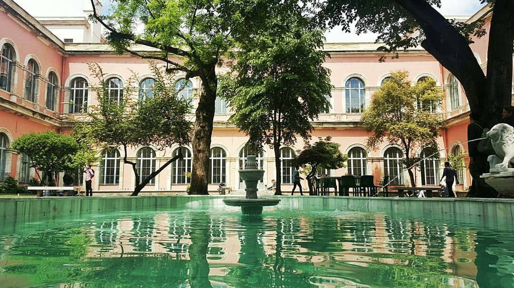
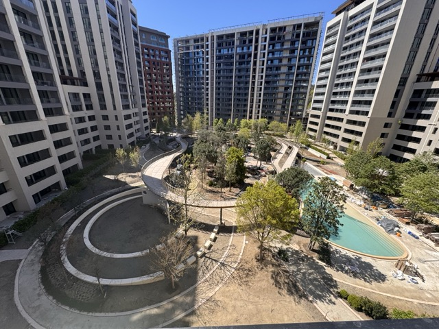

Volume 01: Professional Practice
Weekly sightings from the professional side of landscape architecture.
“Some stories sound linear. None of them really are.”

Spotted: The central courtyard. The ultimate stage where design trace papers fly, coffee cup counts hit double digits, and everyone pretends they aren't listening to the next studio's jury drama.
Site Visit Special
Active Site Report
Construction Site Visit: Landscape In Action
Behind the gated entries of premium courtyards lies a complex engineering puzzle. We traded our studio tracing papers for boots and active realities at ESTA's residential construction site, uncovering the gaps between abstract drawing and physical materialization.
The Lecture Feed
Speaker Series Sightingsçisem demirel koyun
the mind-reader of the studio

damla turan
redefining the unseen narrative
gülce kantürer
navigating the deep research
dilara kuş şahin
restoration as poetry
ebru erbaş gürler
the blueprint for professional stance
The Mission
This blog does not summarize lectures like class notes. It collects impressions, contradictions, career signals, and the parts of professional talks that linger after the room goes quiet. It is part reflection, part observation, and part studio gossip.
“Landscape Girl is an observer, not a narrator. She collects what lingers after the talk is over.”